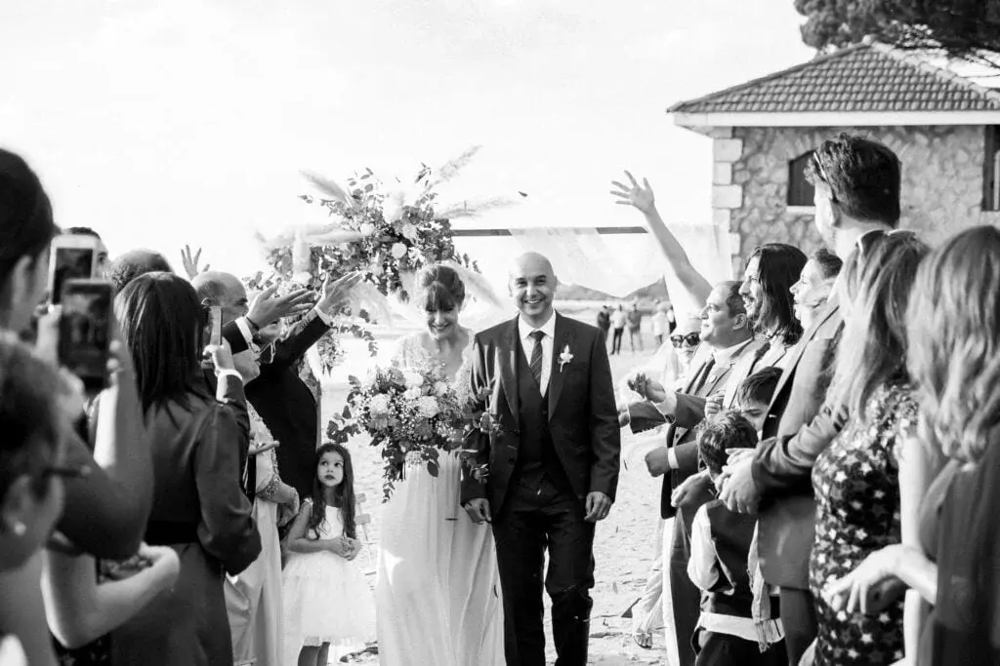
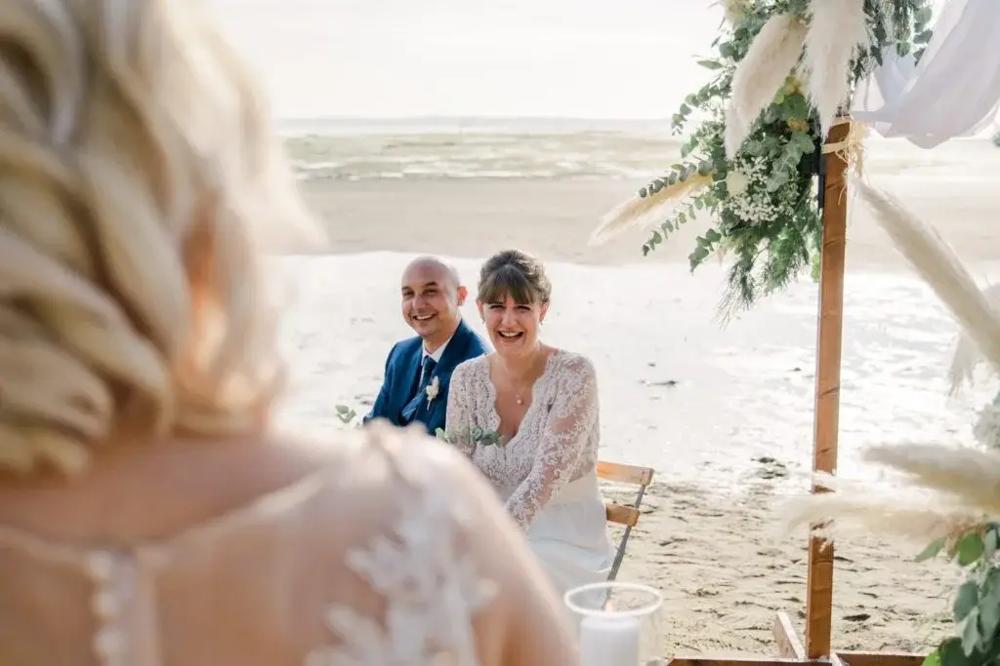

Le bassin d'Arcachon
Vous souhaitez officialiser votre union par une cérémonie laïque les pieds dans l’eau sur le Bassin d’Arcachon mais vous ne savez pas comment faire ?
Pas de panique ! Je suis là pour vous aider dans votre organisation, votre décoration et surtout dans votre choix du cadre idéal pour échanger vos vœux.

En ayant fait le choix de vous marier sur le Bassin d’Arcachon de nombreuses possibilités s’offrent à vous, entre les plages et les lieux de réception qui vous combleront par un panorama sur l’ensemble du Bassin d’Arcachon.
Essentiellement organisée en plein-air, la cérémonie laïque est de plus en plus convoitée par les futurs mariés. En effet, le mariage à l’église est de moins en moins demandé, les mariés préfèrent maintenant se promettre fidélité lors d’une belle cérémonie personnalisée et qui les représente entièrement.
Concernant la décoration, quoi de mieux qu’une belle et simple arche blanche fleurie aux couleurs de votre mariage, accompagnée d’une traînée de chaises blanches ornées de couronne de fleurs. Pour la suite de la décoration laissez libre cours à votre imagination, en tant que wedding designer je m’occuperai de la création de décorations personnalisées.
La beauté du site et la splendeur de votre union laisseront vos invités sans voix, aussi bien pour un mariage de 30 que de 200 personnes la cérémonie laïque convient à tous les styles de mariages.

Pensez à prévenir vos invités du lieu de cérémonie, notamment si la cérémonie va se dérouler sur la plage, cela peut-être très important pour toutes les femmes qui comptaient porter de magnifiques chaussures à talons. Ces petits détails permettent à tous vos proches d’être plus détendus pour regarder votre échange de vœux les yeux pétillants de joie.

Organiser une cérémonie n’est pas toujours chose facile à faire, alors je suis là pour vous aider et pour vous trouver tout ce qu’il vous faut sur Bordeaux et sa région. Grâce à mon métier d’organisatrice de mariage haut de gamme, je peux vous accompagner pour trouver un thème qui vous ressemble, avec une décoration qui sera à votre image et qui vous correspondra à merveille en m’inspirant de vos goûts personnels, votre style, votre personnalité et que tout soit idyllique comme dans vos rêves. Avec mon réseau de prestataires incroyables, je vous proposerai la crème de la crème pour vous accompagner jusqu’au bout de vos rêves, vous n’aurez plus qu’à vous laisser transporter par la magie de ces havres de paix de toute beauté !
Nous allons discuter ensemble de vos choix, de vos demandes particulières pour votre mariage, pour que votre union soit parfaite, et en tant que wedding planner sur mesure je ferai tout pour que votre mariage sorte tout droit de conte de fées. Grâce à tous ces petits détails, tous les éléments sont réunis pour que vous passiez des moments mémorables ! Alors, séduits ? Si c’est le cas n’hésitez pas à m’appeler ou à m’envoyer un mail.
Lovely Day Event c'est plusieurs types de prestations
L'organisation de mariage
Je vais intervenir sur toutes les étapes de vos préparatifs et vous guider dans vos choix. Je suis force de proposition pour que votre mariage ne ressemble qu’à vous.
Décoration de mariage
Créative et passionnée, je suis certifiée Wedding Designer et je conçois une ambiance scénographique qui correspond au thème de votre mariage.
Coordination le jour J
Je serai le chef d’orchestre pour gérer les différents prestataires, la mise en place de votre décoration et le déroulement de cette belle journée.